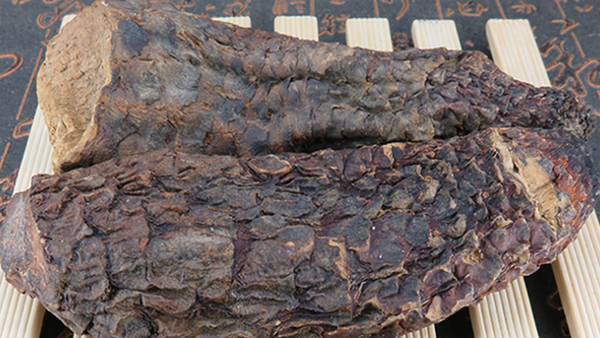
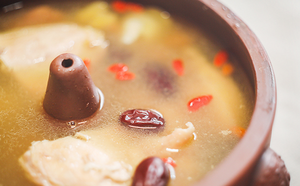

原文连接:https://www.daquan.com/post/10939.html
沙漠人参说的就是肉苁蓉，肉苁蓉是一味非常珍贵的药材，从古代起就是补肾壮阳方子里的常见药材，现在也是被人们视为一种十分高级的养身药。可不要小看肉苁蓉，肉苁蓉的功效与作用及食用方法是非常多的，它可以壮阳补肾、治疗宫寒并且老年人服用非常好。
肉苁蓉的功效
1、温肾助阳

肉苁蓉是一个十分滋补的好药材，对于肾阳虚的患者来说是非常适合食用的，食用肉苁蓉可以温补肾阳，并且肉苁蓉药性为温补，补阳不伤阴，不会出现矫枉过正的现象。
2、补益精血
肉苁蓉对精血亏虚的朋友好处非常大，肉苁蓉有着很好的补益精血的作用，经常熬夜加班会导致体内精血不足，食用肉苁蓉会让气色更红润。
3、润肠通便
肉苁蓉有着润肠通便的功效，可以促进肠胃蠕动加速体内肠胃代谢，并且有因为肾虚便秘的，肉苁蓉有着补肾治便秘的功效。
4、消除疲劳
因为压力的过大和熬夜加班、玩手机、学习等等的原因导致睡的越来越晚，这种情况下第二天还有正常的生活时会非常疲惫，肉苁蓉有着提高活力，提高活性消除疲劳的功效。
肉苁蓉的作用
1、补肾壮阳

对于男性朋友来说，经常食用肉苁蓉可以补肾壮阳，特别是男性出现早泄等男性问题时，食用肉苁蓉能治疗男性疾病。
2、治不孕

肉苁蓉有着治疗不孕的作用，男性吃了可以增强男子精子活力，女性吃了有补益肾精，暖宫的作用，结婚后急着要孩子的夫妻可以吃肉苁蓉调理身体。
3、增强免疫力
肉苁蓉身为保健的名贵药材，有着补肾的功效，能有效的提高人体免疫力。肾为人体的本源，肾精足，身体会更强壮。
4、调理月经

对于月经周期不稳，小腹寒冷，月经量少的可以食用肉苁蓉调理月经，肉苁蓉有着暖宫的功效，因为体质寒导致月经淤积的食用后效果显著。
肉苁蓉的食用方法
1、肉苁蓉煮粥
将肉苁蓉洗净后泡在水中半小时，将粳米洗净，将肉苁蓉水和肉苁蓉一起倒入锅中，煮到粳米全部烂掉即可。粳米性平和肉苁蓉一起煮粥，冬天早上喝上一碗，一天都不会感觉寒冷。
2、肉苁蓉泡茶
肉苁蓉泡茶不宜多，泡茶时选用3-4片肉苁蓉即可，可以同时配伍枸杞一起泡茶，肉苁蓉有着补肾壮阳的作用，枸杞可以补肝明目非常适合一起泡茶食用。
3、肉苁蓉煲汤

将整鸡洗净，然后将肉苁蓉片和葱姜蒜一起放在整鸡肚子里，然后放入砂锅煮，水开后清理废物再加水煮一遍，然后再锅里放入配菜，煮熟即可。
4、肉苁蓉泡酒
肉苁蓉是泡药酒的好材料，肉苁蓉和锁阳一起泡药酒有着非常强的补肾壮阳的效果，男性可以在家中泡上一坛，偶尔小酌一杯，效果非常显著。
结语：通过上文的介绍，相信大家都知道了肉苁蓉的功效与作用及食用方法，希望朋友们能在生活中食用适量的肉苁蓉来进行调养身体。
推荐阅读：